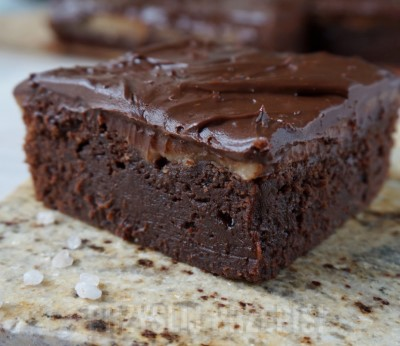

Składniki:
- 280g masła
- 280g gorzkiej czekolady
- 4 jajka M lub 5 jajek L
- 260g cukru
- 170g mąki pszennej
- łyżeczka soli
Słony karmel,składniki:
- 180 g cukru
- 1 łyżka miodu
- 50 ml wody
- 50 g masła
- 45 ml śmietany kremowki 36%
- gruboziarnista sól
Ganache czekoladowy,składniki:
- 3/4 szklanki śmietany kremówki 36%
- 170 g gorzkiej czekolady
Przygotowanie:
- Mąkę wymieszać z solą, następnie przesiać i odłożyć. Masło umieścić w garnuszku, podgrzać, wyłączyć palnik i dodać
czekoladę, wymieszać do otrzymania gładkiego sosu czekoladowego. Lekko przestudzić. W drugim naczyniu lekko roztrzepać
całe jajka z cukrem. Dodać przestudzoną czekoladę i wymieszać do połączenia. Następnie dodać przesianą mąkę z solą,
wymieszać i przelać do formy o wymiarach 25cm x 25cm wyłożonej papierem do pieczenia. Piec przez 20 - 25 minut w temperaturze
180 stopni C (lub chwilę dłużej). Gotowe brownie jest lepkie w środku (czekolada oblepia patyczek), ale na patyczku
włożonym w środek ciasta nie powinno być śladów surowego ciasta.
- Solony karmel: W małym garnku z grubym dnem umieścić cukier, miód i wodę. Zagotować, mieszając, do rozpuszczenia
się składników. Gotować aż karmel będzie bursztynowo – złoty a następnie zdjąć z palnika. Dodać masło i śmietanę kremówkę,
wymieszać do rozpuszczenia. Wrócić na palnik i pogotować na małej mocy palnika, okoły minuty, mieszając. Dodać około
½ łyżeczki grubo mielonej soli. Wystudzić. Zgęstniałą masę wyłożyć na brownie.
- Czekoladowy ganache: Do małego garnka wlać kremówkę, podgrzać i doprowadzić do wrzenia. Zdjąć z palnika, dodać czekoladę
i wymieszać, do uzyskania gładkiego sosu czekoladowego. Ganache wylać na schłodzoną masę karmelową. Umieścić w lodówce,
do stężenia.
